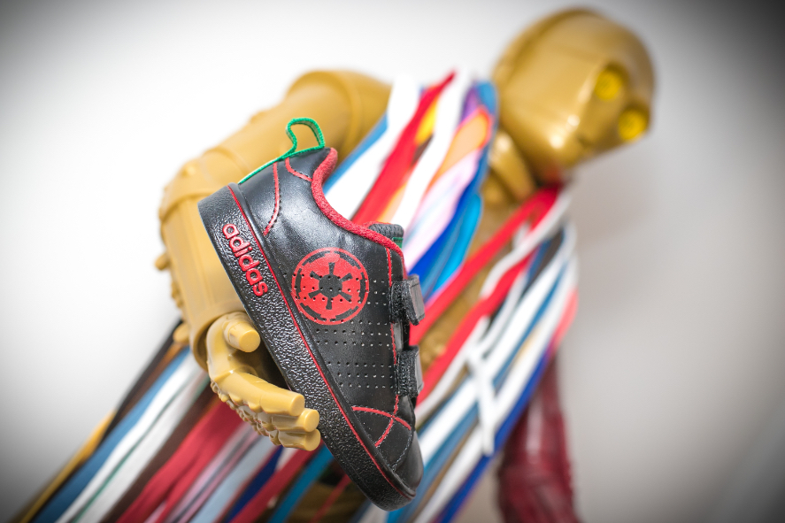
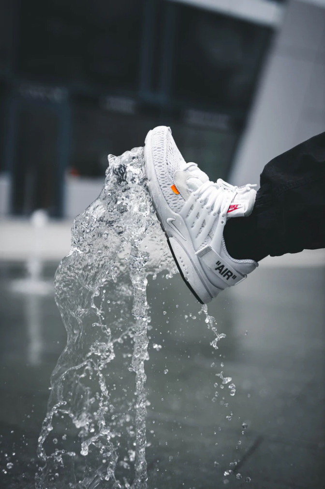

Le constat : Une paire de chaussure sur deux vendues est une sneakers et l’industrie textile est la seconde plus polluante au monde. Combien de vos paires preferées ont finis à la poubelle par manque d’entretiens ? Et combien d’abandon parce que plus à votre goût ? Re-Shoes c’est un savoir-faire pour prendre soins, ressusciter, sublimer ta paire préférées. Prendre soins de ses sneakers c’est prendre soins de la planète. (et évidemment avoir du style )

‘’ Seule la chaussure sait si la chausette à des trous‘’

industrie textile poluante réparer au lieu de jeter produits naturels
chaussure restaurée au re-conditionnée moins cher que le neuf seconde vie
être différent et unique, ta paire de chaussures aussi il y en a pour tous les goûts
être différent et unique, ta paire de chaussures aussi il y en a pour tous les goûts